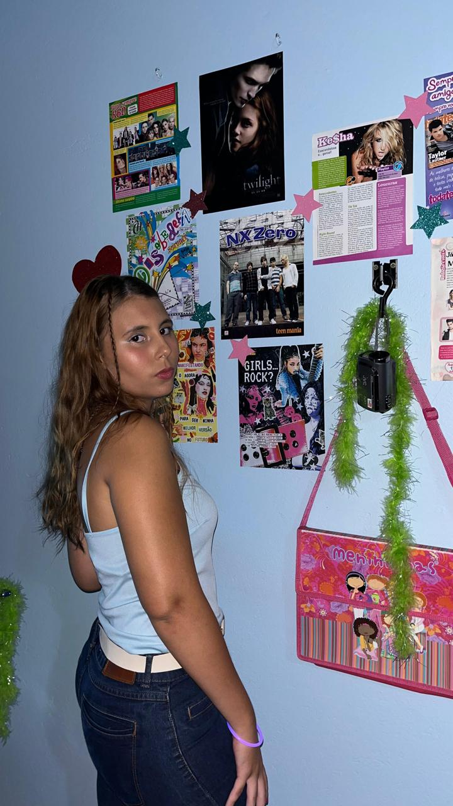
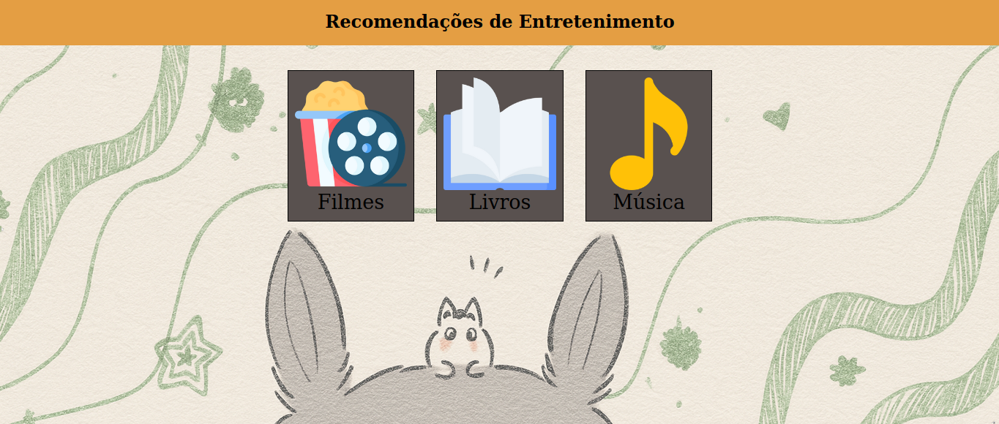
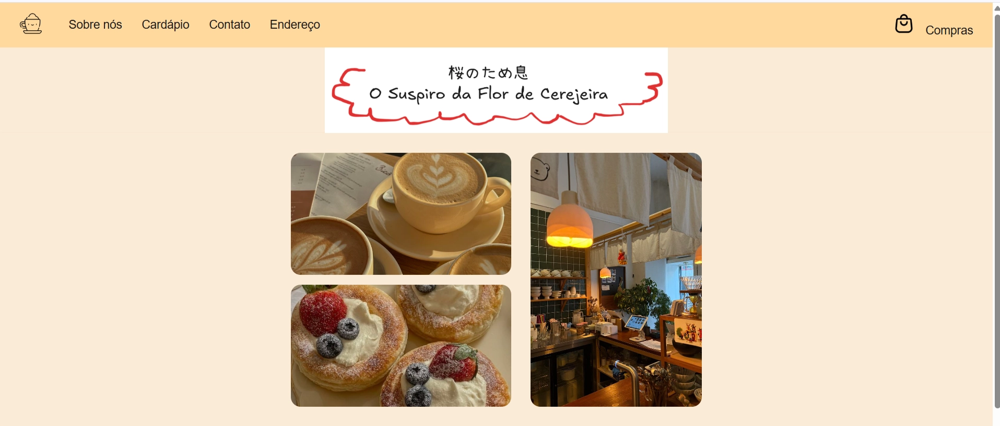

{kind=link}
Portfólio Aero
Design inspirado na era áurea do Windows Vista/7 e Frutiger Aero.
Ver Detalhes"Eu penso bastante, mas não falo nada." — Anne Frank
Download CV
Estudante de Ensino Médio Integrado ao Técnico em Mecânica no IFSC com conclusão prevista para 2026. Unindo o raciocínio lógico da engenharia com a paixão pelo desenvolvimento de software, venho aprimorando competências em HTML5, CSS3, JavaScript e Python.
Possuo um perfil proativo e organizado, com experiência prática em liderança como representante de classe e atuação voluntária na área de mídia. Além do desenvolvimento web, tenho domínio de ferramentas como Excel Avançado e fluência em Inglês (nível avançado), o que me permite navegar com facilidade em ambientes corporativos e técnicos.
HTML5
CSS3
JS
Python
GitHub
Design inspirado na era áurea do Windows Vista/7 e Frutiger Aero.
Ver Detalhes
Sua próxima história favorita: Um hub interativo para descoberta de filmes, livros e músicas com curadoria personalizada.
Ver Detalhes
O Suspiro da Flor de Cerejeira: Website experimental de um café temático japonês, inspirado na estética dos mangás shoujo.
Ver Detalhes